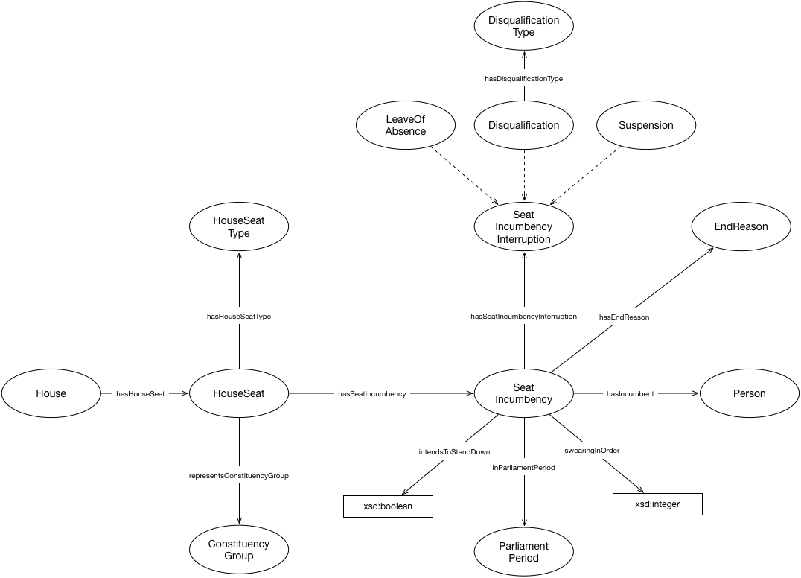

IRI: http://parliament.uk/ontologies/house-membership/ConstituencyGroup
IRI: http://parliament.uk/ontologies/house-membership/Disqualification
IRI: http://parliament.uk/ontologies/house-membership/DisqualificationType
IRI: http://parliament.uk/ontologies/house-membership/EndReason
IRI: http://parliament.uk/ontologies/house-membership/House
IRI: http://parliament.uk/ontologies/house-membership/HouseSeat
IRI: http://parliament.uk/ontologies/house-membership/HouseSeatType
IRI: http://parliament.uk/ontologies/house-membership/LeaveOfAbsence
IRI: http://parliament.uk/ontologies/house-membership/ParliamentPeriod
IRI: http://parliament.uk/ontologies/house-membership/Person
IRI: http://parliament.uk/ontologies/house-membership/SeatIncumbency
IRI: http://parliament.uk/ontologies/house-membership/SeatIncumbencyInterruption
IRI: http://parliament.uk/ontologies/house-membership/Suspension
IRI: http://parliament.uk/ontologies/house-membership/hasDisqualificationType
IRI: http://parliament.uk/ontologies/house-membership/hasEndReason
IRI: http://parliament.uk/ontologies/house-membership/hasHouseSeat
IRI: http://parliament.uk/ontologies/house-membership/hasHouseSeatType
IRI: http://parliament.uk/ontologies/house-membership/hasIncumbent
IRI: http://parliament.uk/ontologies/house-membership/hasSeatIncumbency
IRI: http://parliament.uk/ontologies/house-membership/hasSeatIncumbencyInterruption
IRI: http://parliament.uk/ontologies/house-membership/inParliamentPeriod
IRI: http://parliament.uk/ontologies/house-membership/representsConstituencyGroup
IRI: http://parliament.uk/ontologies/house-membership/intendsToStandDown
IRI: http://parliament.uk/ontologies/house-membership/swearingInOrder
This HTML document was obtained by processing the OWL ontology source code through LODE, Live OWL Documentation Environment, developed by Silvio Peroni.